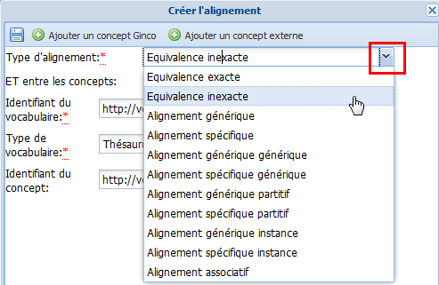

Typage des alignements
ProcédureTyper un alignement⚓
Le type de l'alignement est défini lors de la création de l'alignement. Il peut être modifié en cliquant sur le bouton
 à droite de la ligne de l'alignement en question.
à droite de la ligne de l'alignement en question.La fenêtre
Créer l'alignements'affiche.
Cliquez sur le bouton
 du champ
du champ Type d'alignement.Un menu déroulant s'affiche.

Sélectionnez le type d'alignement souhaité puis apportez les modifications induites, si nécessaire.
RéglementaireTypes d'alignements disponibles⚓
Relations disponibles entre les Concepts alignés Type d'alignement
Usage
Équivalence exacte
La portée du Concept cible est équivalente à celle du Concept source. Les Concepts sont interchangeables.
Équivalence inexacte
La portée du Concept cible n'est pas exactement la même que celle du Concept source.
Alignement générique
Alignement générique générique
La portée du Concept cible est plus large que celle du Concept source : le Concept cible est un générique du Concept source.
Alignement spécifique
Alignement spécifique générique
La portée du Concept cible est plus précise que celle du Concept source : le Concept cible est un spécifique du Concept source.
Alignement générique partitif
L'entité désignée par le Concept cible contient l'entité désignée par le Concept source (relation tout/partie).
Alignement spécifique partitif
L'entité désignée par le Concept cible appartient à l'entité désignée par le Concept source (relation partie/tout).
Alignement générique instance
L'entité désignée par le Concept cible est une classe dont l'entité désignée par le Concept cible est une instance.
Alignement spécifique instance
L'entité désignée par le Concept cible est une instance de la classe désignée par le Concept cible.
Alignement associatif
Le Concept source est sémantiquement associé au Concept cible, par une relation autre que hiérarchique ou d'équivalence.
AttentionImportant⚓
Les champs suivis d'un astérisque rouge sont obligatoires.
Cliquez sur

Enregistrerpour sauvegarder l'alignement ou ses modifications.La fenêtre
Créer l'alignementse referme.
Cliquez sur
Enregistrerpour sauvegarder les modifications apportées auConcept.